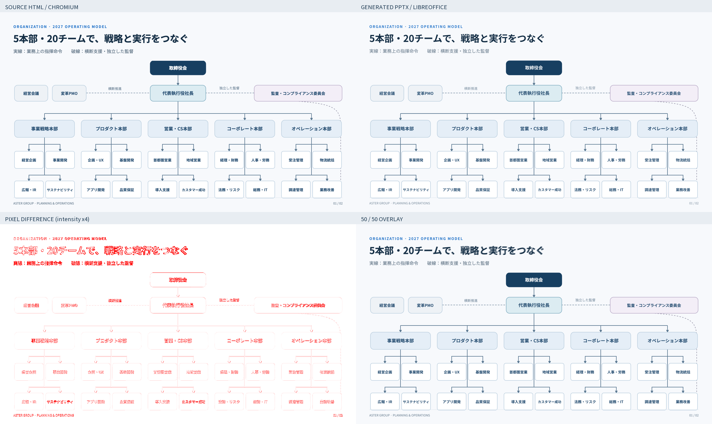
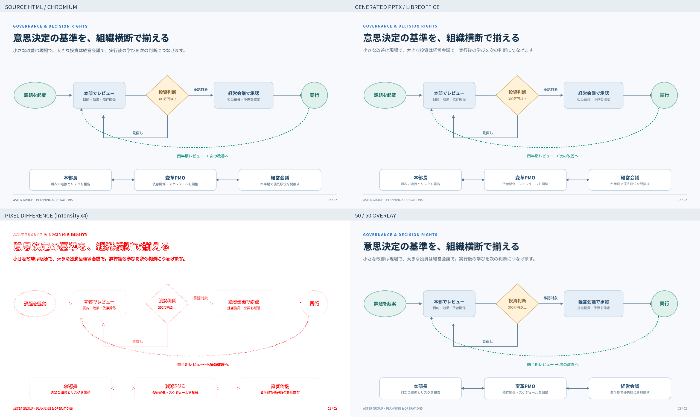

入力はChromium、変換後PPTXはLibreOffice Impress → PDF → PDFBoxで描画しました。PowerPointアプリそのもののスクリーンショットではありません。文字のアンチエイリアスやフォント描画も差分に含み、ピクセル全一致を合格条件にはしていません。
全体変換：成功。12を超える最大チャンネル差を「差分ピクセル」とします。画像の位置合わせ・自動縮尺補正は行いません。ヒートマップだけは差分強度を4倍にしています。
差分ピクセル 3.39% · 平均絶対誤差 1.88 / 255 · 輪郭の不一致 27.55%

差分ピクセル 2.88% · 平均絶対誤差 1.73 / 255 · 輪郭の不一致 37.52%
